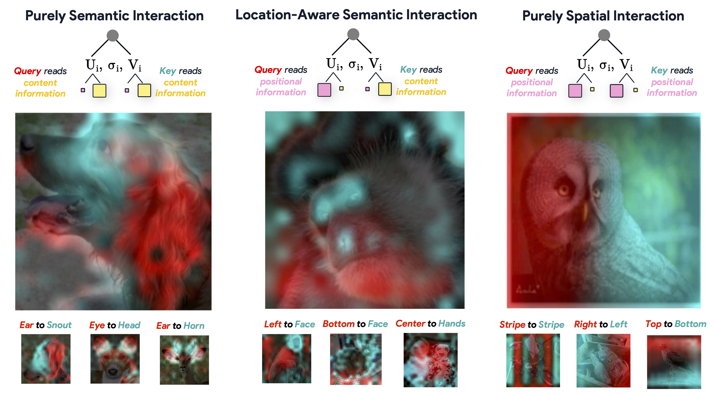
Self-attention is the central computational primitive of Vision Transformers, yet we lack a principled understanding of what information attention mechanisms exchange between tokens. Attention maps describe where weight mass concentrates; they do not reveal whether queries and keys trade position, content, or both. We introduce Bi-orthogonal Factor Decomposition (BFD), a two-stage analytical framework: first, an ANOVA-based decomposition statistically disentangles token activations into orthogonal positional and content factors; second, SVD of the query-key interaction matrix QKT exposes bi-orthogonal modes that reveal how these factors mediate communication. After validating proper isolation of position and content, we apply BFD to state-of-the-art vision models and uncover three phenomena:
Overall, BFD exposes how tokens interact through attention and which informational factors – positional or semantic – mediate their communication, yielding practical insights into vision transformer mechanisms.
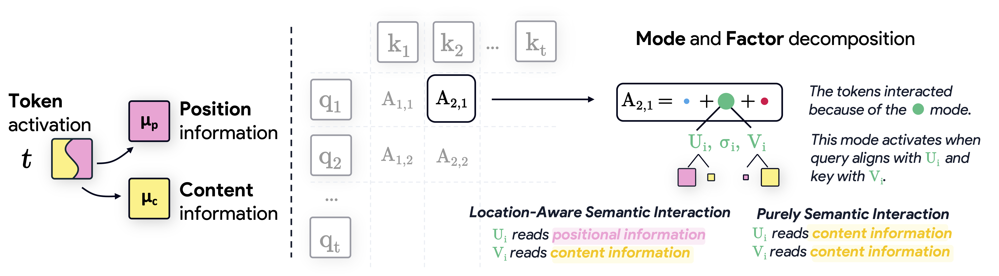
Bi-orthogonal Factor Decomposition (BFD) splits each ViT token activation into three orthogonal components: a global mean term, a positional component capturing where the token is, and a content component capturing what it represents. A token’s activation is approximated as the sum of these three factors, each expressed in its own basis, giving a clean view of geometry and semantics inside the same representation. We then project each attention head’s query–key interaction matrix onto these subspaces, decomposing it into different types of position- and content-driven interactions.
We validate BFD by training linear probes on positional, content, and recomposed features to confirm that each subspace captures the specific information it is intended to represent.
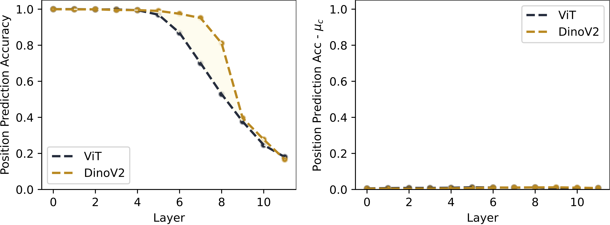
BFD decomposes each layer’s attention into factor pairs and shows that most attention energy flows through content–content and content–position interactions, especially in deeper layers. Interestingly, DINOv2 dedicates more energy to content–position coupling than the supervised ViT, indicating stronger localization-aware semantic integration.
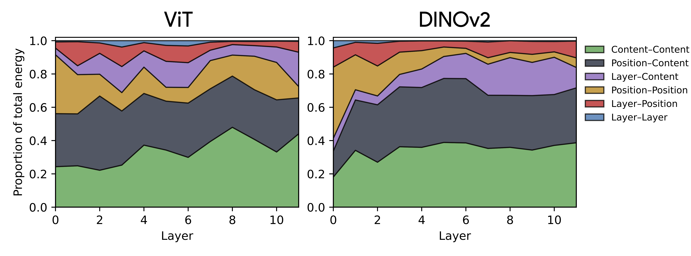
Rich content-driven interaction motifs across the modes in DINOv2. At a finer resolution, we observe that the content-driven energy in DINOv2 is distributed broadly across many modes rather than concentrated in a few dominant ones. In contrast, the supervised ViT not only allocates less overall energy to content-driven interactions, but also the energy is concentrated in a few dominant modes.
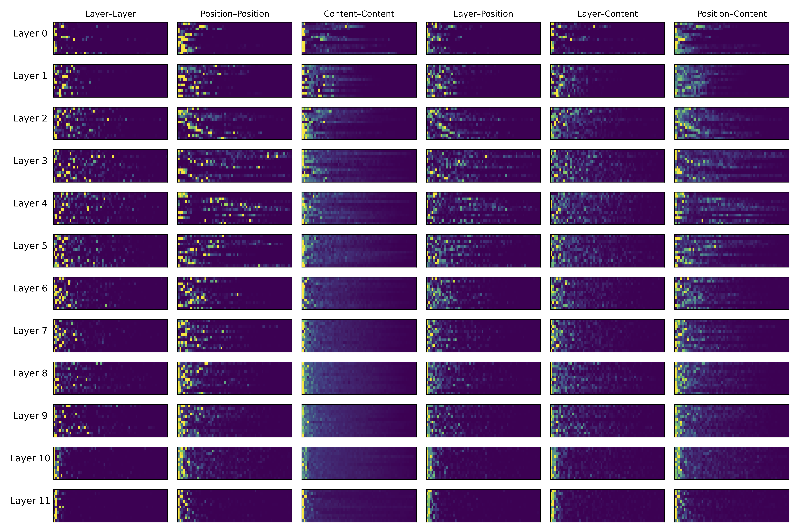
Supervised ViT: interaction energy across factors and modes
.
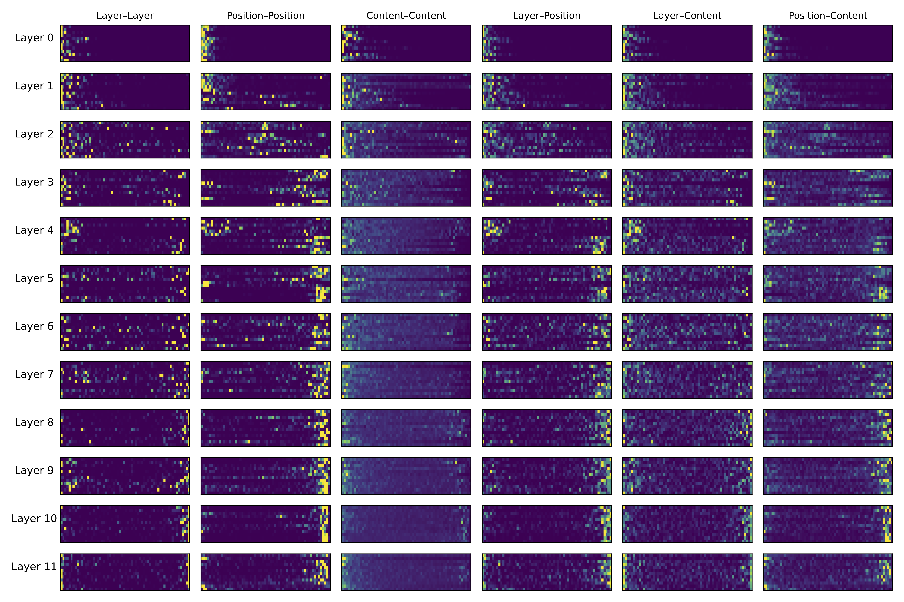
DINOv2: richer, more distributed energy in content-driven components
.
Measuring the relative contribution of content-, poition-, and layer-driven interactions reveals that modes implement specialized interactions.
Modes cluster near vertices and edges instead of dispersing uniformly across the simplex.
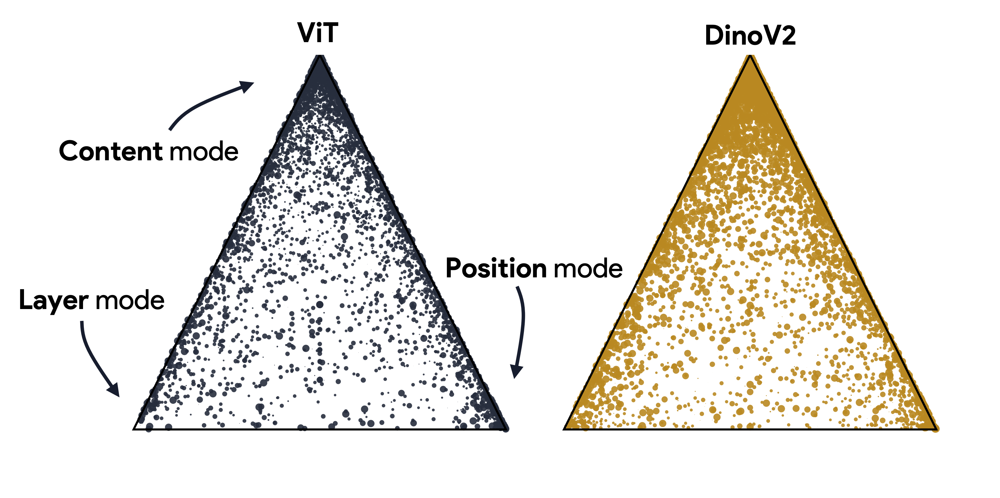
The vertices correspond to layer-, position-, and content-dominated operators, and points along edges reflect mixed operators (e.g., content–position). Hover over the image to see the density distribution.
.
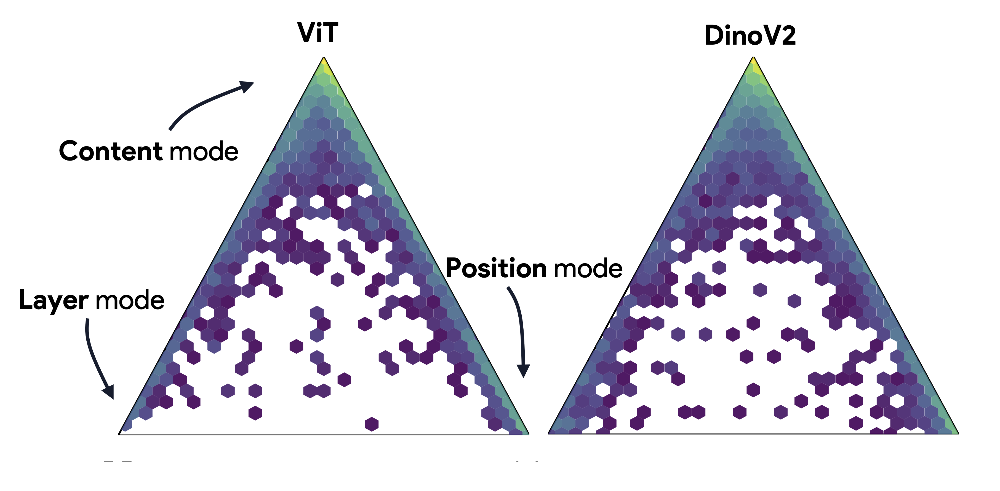
The per-layer view of mode density distributions for ViT (top) and DINOv2 (bottom).
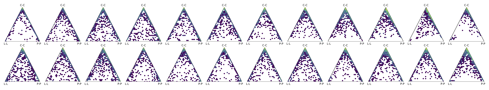
Holistic processing requires the visual system to look beyond local cues by stitching the local features into a global percept. For example, in a puzzle-piece visual anagram, the same pieces can form different objects, so the processor must encode content-driven interactions while remaining spatially anchored—exactly the pattern that BFD reveals in DINOv2, which supposedly shows superior holistic shape capacity with these anagrams.
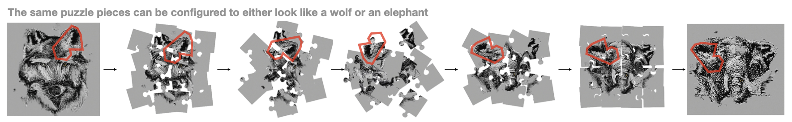
In the isolated positional subspace, DINOv2 preserves a smooth, grid-like manifold across depth, whereas the supervised ViT rapidly collapses its spatial structure early on.
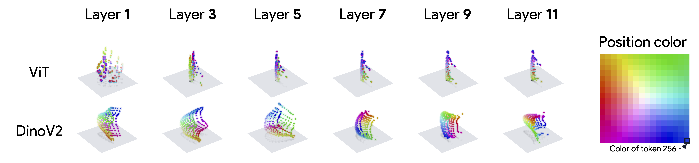
Content similarity matrices show that in the supervised ViT, content components stay highly similar across layers—an “eye” unit mostly becomes a slightly better eye detector. In DINOv2, the content code changes substantially from block to block, as local parts are re-encoded in terms of larger configurations (e.g., an “eye in a face”), consistent with contextual enrichment rather than simple local refinement.
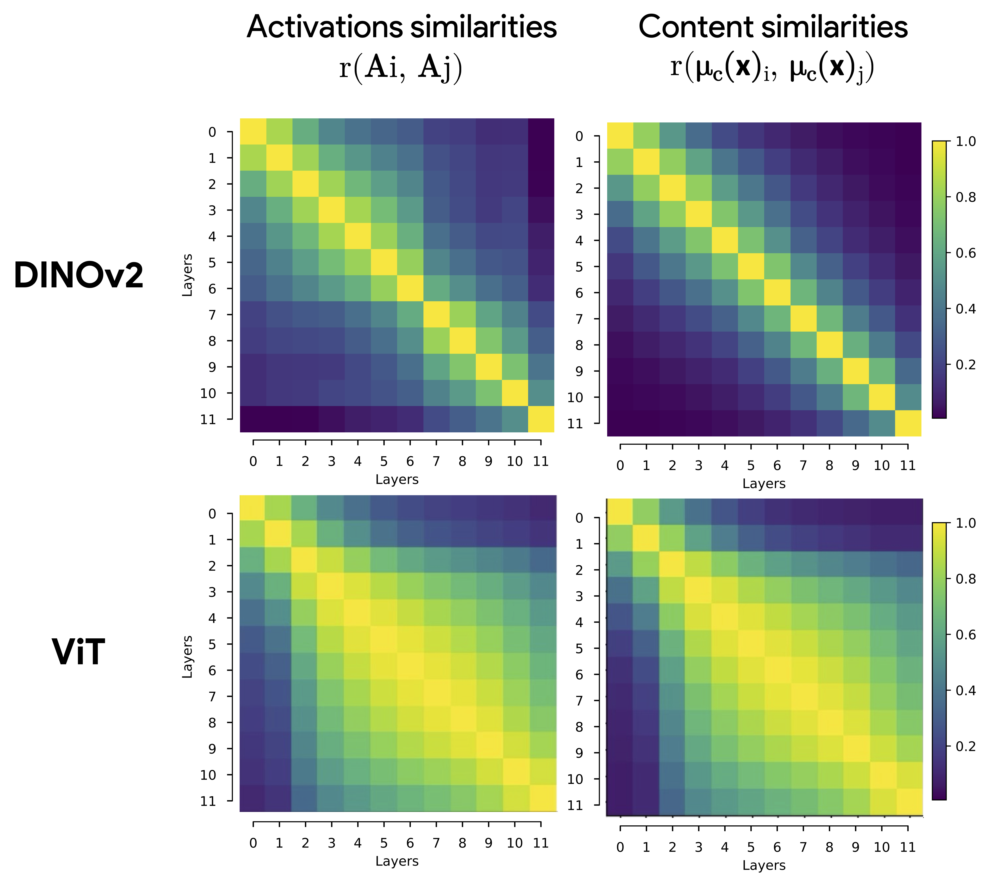
@misc{doshi2025visualanagramsrevealhidden,
title={Visual Anagrams Reveal Hidden Differences in Holistic Shape Processing Across Vision Models},
author={Fenil R. Doshi and Thomas Fel and Talia Konkle and George Alvarez},
year={2025},
eprint={2507.00493},
archivePrefix={arXiv},
primaryClass={cs.CV},
url={https://arxiv.org/abs/2507.00493},
}